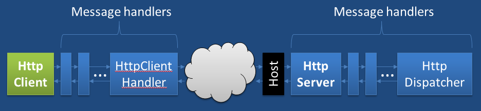

The HttpMessageHandler pipeline is the main extensibility point for the HTTP object model underlying both HttpClient and ASP.NET Web API (they use the exact same model). The pipeline allows up to insert message handlers that can inspect, modify, and process HTTP requests and responses as they pass by. The following diagram shows where HttpMessageHandlers sit in the message path on both client (HttpClient) and server side (ASP.NET Web API). The work like “Russian Dolls” in that each handler passes the request to an inner handler until it hits the network or is short-circuited":

Note that there is absolutely no requirement that you have to use the HttpClient with ASP.NET Web API – it is just to show that the model is symmetric on client and server side.
Our OAuth handler is very simple – it uses the a sample from OAuth.Net provided by Eran Sandler to do the actual OAuth signing.
To run this sample you first need to sign in at the twitter developer site and create an app. That will give you necessary information for performing the OAuth authentication:
Once you have these values then you can continue with the sample.